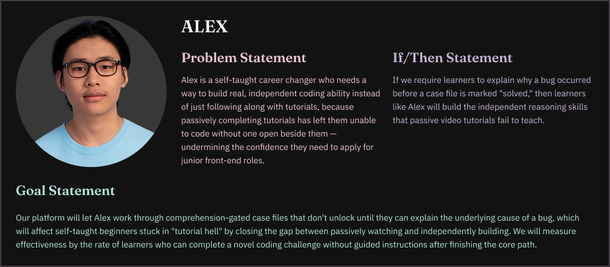
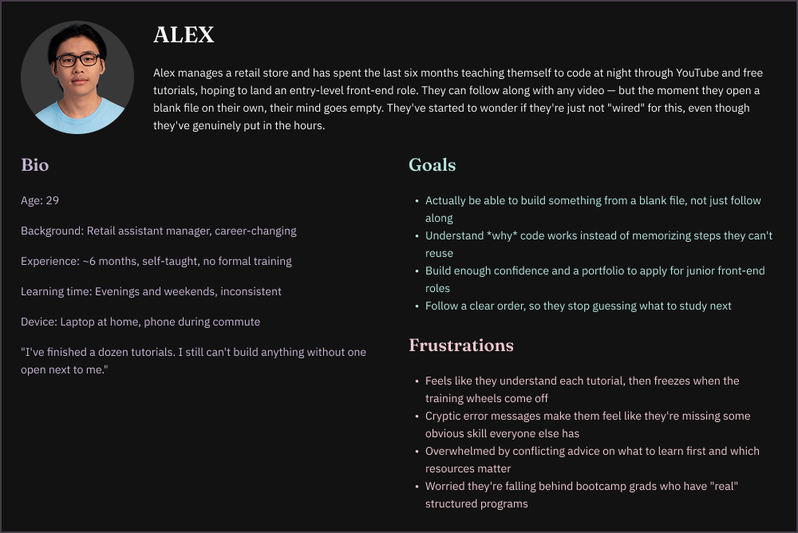
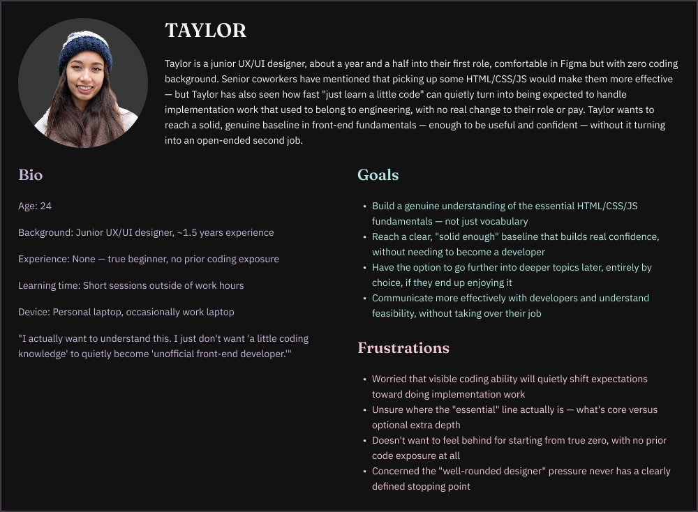
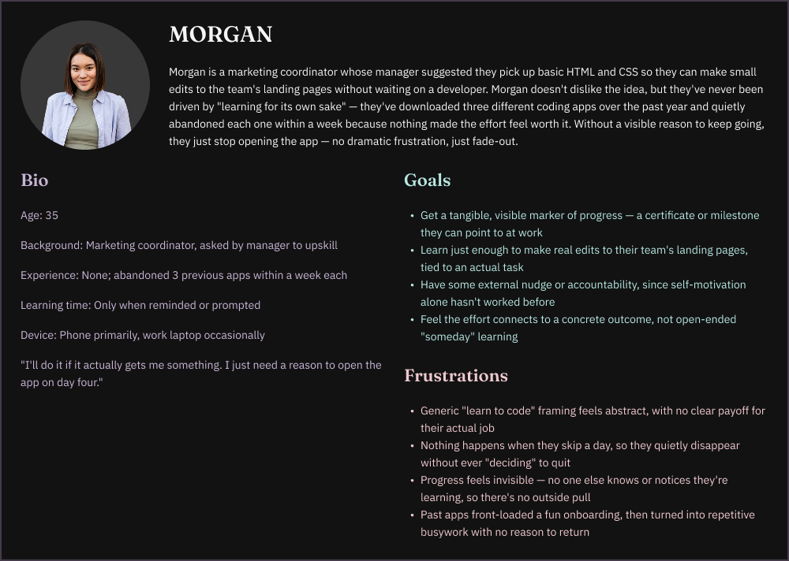
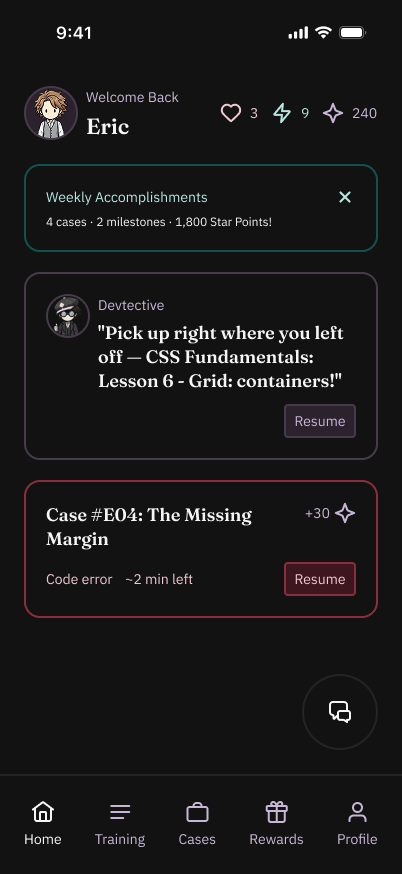
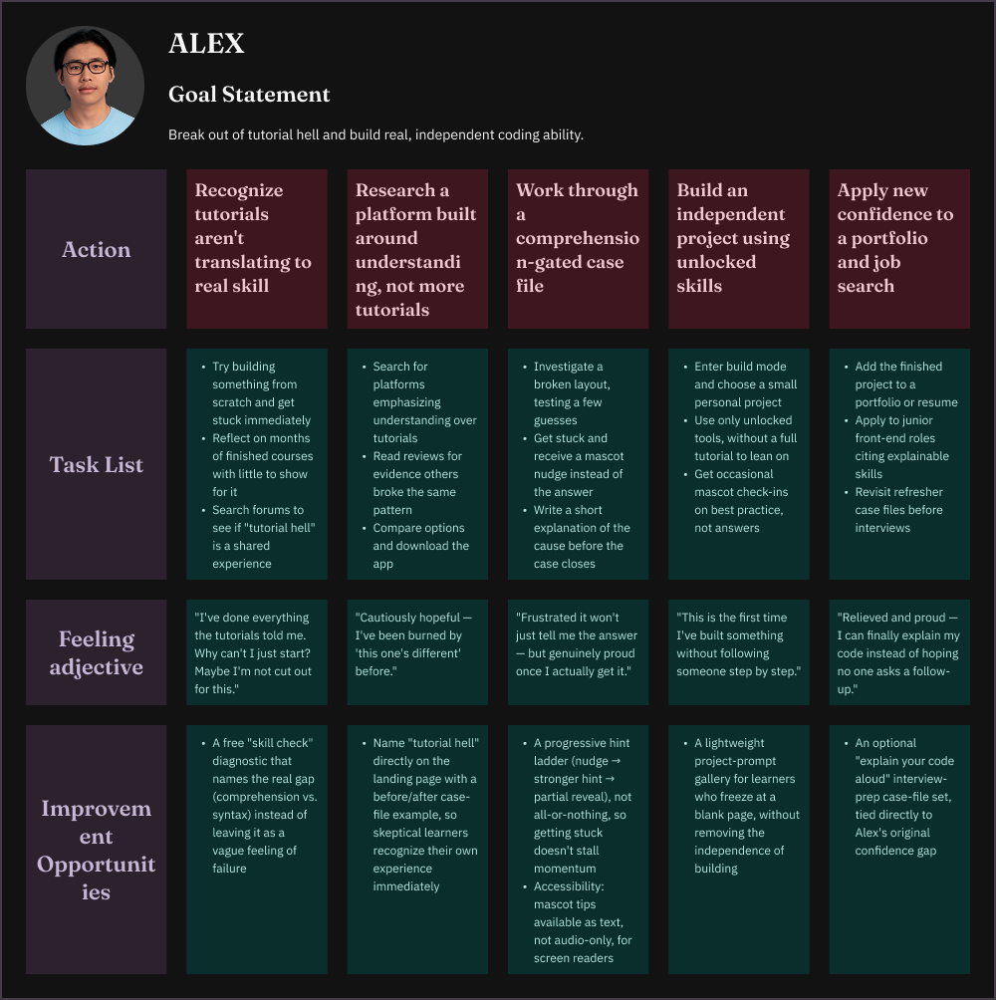
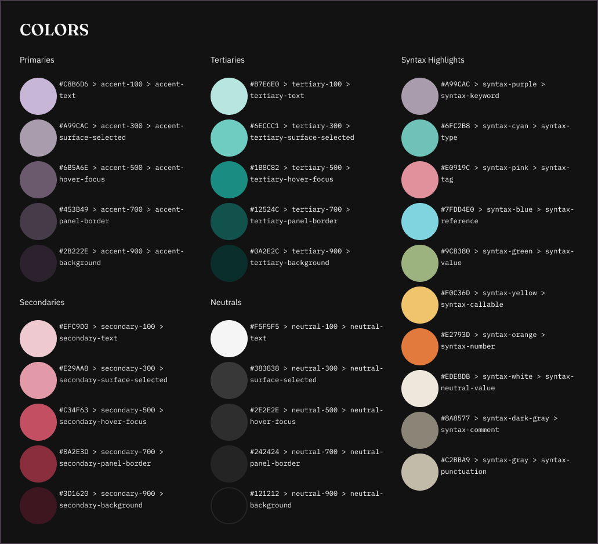
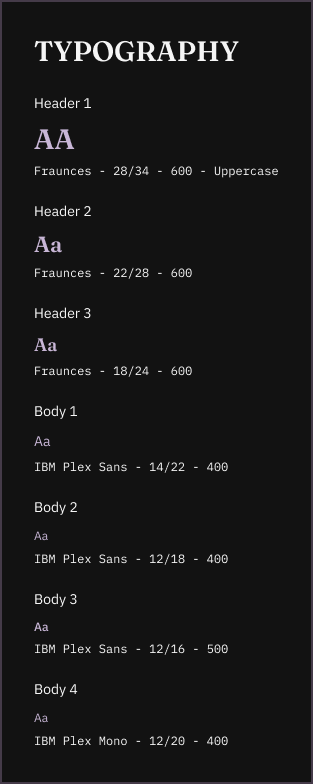

DevTective
A gamified coding-education concept that treats every bug as a case to solve. It responds to a familiar outcome: 5–15% of people who start a free coding course never finish it.
Momentum, not motivation
Interviews with early-stage coders showed a fixable gap: after a few days away, they didn't know where they'd left off.

Three learners
A career changer, a junior designer, and a marketer: who it's for and where each stalls.



Designing for re-entry


The screens
The rest of the concept in high fidelity: case files, build mode, and rewards.
A small design system
Color tokens and a typographic scale keep every screen consistent.


A concept built to test
Deliverable: a problem statement, a re-entry-first IA, and hi-fi wireframes ready for usability testing.